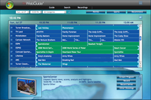
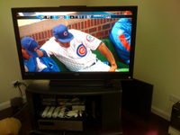
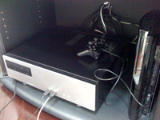

I had an exciting trip to Puerto Rico two months ago (coincidentally, I have not updated this website since before I left). I succeeded in filling up the camera's memory card (about 1000 high quality pictures) and attempted to take some pictures I could put together into a panarama using photoshop. In fact, you can see me looking like a creep on the right. Perhaps whenever I get an inspiration for updating the website layout I will grab the best looking panarama and use it for the header, and who knows, I may even actually create a gallery. In other news, I lasted a few days before I finally burned. According to Joyce, I allegedly forgot to apply suntan lotion completely on one arm. I beg to differ, but that arm appeared to burn. At that point I decided to lather on the lotion every day we went to the beach (negating any chance of tanning in fear of further burns). I also saw some crab like guys on the ocean floor with my goggles and then looked them up (Sea Urchins). Needless to say, after that day I was a little more careful where I put my feet while wading around. In an attempt to exercise more, I purchased an iPod shuffle and Sennheiser MX75 headphones (on clearance) with some gift cards I had saved. You can see on the left that these headphones are a very vibrant lime green, but since I can't see them when I wear them I have to allow other people to be blinded by them. I am very excited to have headphones that don't fall out when I run. I found that carrying my phone was a pain, and the iPod headphones fell out every couple steps. I was able to clip the shuffle onto the back of my shorts and run the cable up my shirt and not even feel like I was carrying anything. That plan worked for that first weekend (although as out of shape as I was, I got home after running about half a mile and just laid down on the kitchen floor for 10 minutes in a pool of my own sweat). I like to tell myself that I will run the following morning, however I always am too tired. I 'eagerly' await my next attempt. I finally ended up taking another stab at WebGuide (the free Slingbox-like plugin for Windows Media Center) after putting it aside for a month, and lo-and-behold it works. As you can see, the interface is pretty sleak and it is a very convenient way for me to schedule recordings (even on my phone). However, it seems to not like playing the actual recordings or streaming live TV on my MacBook (likely due to the now unsupported Mac version of Windows Media Player). So whenever I have the need to watch TV not on my TV (which has yet to really happen) I just open up a Windows XP Virtual Machine, and it works perfectly. Since I now listen to music the majority of the day at work (and during the commute), I bought my first set of headphones that weren't under $20 or included with an MP3 player. They are the Shure SE210, and yes, I waited to find them on sale at a significantly lower price. I've never owned a pair of headphones that came with their own case before. Finally I can hear the TV shows on my phone on the train over the constant chattering of teenagers as the earplugs create a seal. I've tried playing some compressed 128 bit MP3's as well as some Apple Lossless tracks, and thus far have no idea how to tell the difference between them.
'Brief' Update
Posted July 27 2008 9:53PM by Michael
 There has been quite a hiatus in my blogging, as I wanted to change the look of the website but never got around to it yet. Hopefully this update will be sufficient for the time being.
There has been quite a hiatus in my blogging, as I wanted to change the look of the website but never got around to it yet. Hopefully this update will be sufficient for the time being.
The TV of choice was the Vizio 47" VO47L 1080p LCD, purchased at CostCo. I decided it had the best price/performance ratio of LCDs, and it was nice that it was 1080p (giving me some future proofing). Initially I was interested in Plasma, however I still am wary of even temporary burn in as an avid video gamer, so I decided LCD was the way to go. When at CostCo to pick it up, it looked a lot smaller than anticipated, mostly because it was sitting by 52" TVs. However, after bringing it home, it looks monsterous again. I must say, after setting it up (and finding that Comcast finally broadcasts the local HD channels unencrypted (this didn't seem to be the case last time I checked), the quality of HDTV on a giant TV is glorious. In fact, I don't know how I will ever go back to watching TV on a normal TV. Even smaller HDTVs now longer can compare. Granted I still have to watch all the non-local channels in standard definition, but the HD feed is so crisp, clear, and bright. Along with the new TV, I also built a Windows Media Center (Vista Ultimate) based DVR. Once it is fully customized with plugins, not only will it be able to record (allegedly) 2 standard broadcasts and 2 HD broadcasts simultaneously, but also will include automatic commercial skipping of recorded TV as well as a built in Slingbox-type ability (WebGuide) so I can watch recorded TV as well as stream live TV. Currently I'm having some issues setting up more than 2 tuners, and the WebGuide currently isn't display streams likely due to missing codecs. I'm sure these will be fixed in the near future, however likely not too soon.
New TV
Posted May 16 2008 3:53PM by Michael
 I finally have decided to show the world my new TV. Ever since I interned last summer, I decided that after I graduated I would buy a big HDTV. While I was tempted many times during the year, I held out. Pretty much the first day I could once I got back, I went and bought it.
I finally have decided to show the world my new TV. Ever since I interned last summer, I decided that after I graduated I would buy a big HDTV. While I was tempted many times during the year, I held out. Pretty much the first day I could once I got back, I went and bought it.
After quite a hiatus, MW is back online. The two week break was attributed to having no internet, and since the server has no wireless card, I could not use anyone else's internet. I also had to change some network settings in the virtual machine and just got lazy until right now. There will likely be multiple updates in the near future, detailing many new updates to my life. These include: Also, one day I may be bored enough to attempt to troubleshoot the apparent difficulty that MW has being displayed in IE7. That day has not yet arrived.
Back Online
Posted May 14 2008 12:43AM by Michael
Today, while being briefed on the history of the octopi and the Detroit Red Wings by William Thomas Burgess V, we came across a thought: Could we combine our future goals of a giant aquarium with the idea of raising baby octopi as a sort of baby octopi farm? The baby octopi I am referring to are the baby octopi you find in food, often (in my case) chinese food along with squid (one of my favorite dishes, but that is beside the point). Could you imagine a school of baby octopi swimming around a pool the size of a wall? Is a group of octopi even called a school? My research basically told me there is no such species of baby octopi: what I have been eating are literally baby octopi. However, my research also led me to a Yahoo Question. Please read it in its entirety.
Baby Octopi Farms
Posted April 20 2008 11:32PM by Michael
On a slightly related note, I also pondered another question. Apparently people throw octopi onto the ice during Red Wings games, and the man pictured on the right, Al Sobotka, picks them up and whips them in a circle. According to the Wikipedia entry above, an average of 25 octopi hit the ice during a Red Wings game, and a record of 54 happened in 1996! That's more octopi than I've seen in my life. It also is rather interesting that the NHL does not permit things thrown on the ice, but looks the other way towards octopi, as per the following quote from the VP of media relations:
-
"Every so often, an octopus slips out of someone’s hands, and Al is right there to take care of the matter. And he cannot be blamed if, as it tries to break free from Al’s grasp, the octopus lifts Al’s arm and twirls itself in the air."
Except for in the following situation:
-
"In the 2008 playoffs, the NHL issued a warning that while they were fine with Octopuses being thrown on the ice, the Red Wings would be fined 10,000 if Sobotka twirled the Octopus in the air, as bits of the Octopus were getting in the ice and on the opposing goaltender."
Edit: Per William Thomas Burgess V's request, I have added the event he references in his comment.
By no means is this a new story, but I just wanted to share with you what is easily the best fast food promotion in history:
The Greatest Promotion in History
Posted April 20 2008 3:54PM by Michael


Yes, those are mini bobbleheads of the infamous 'King'. Unfortunately, I only possess 4 of these. I was completely unaware of the promotion when it was going on, and my dad got them for me. However, had I known about it, Burger King would have sold an extra 8+ meals to me.